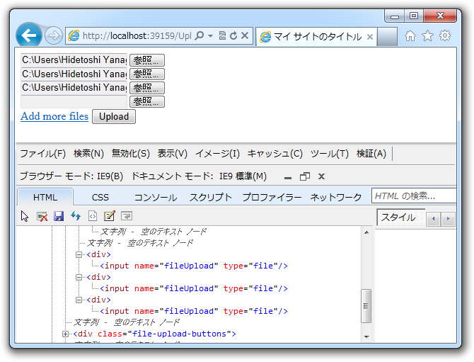
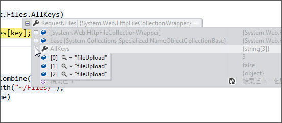

WebMatrix でファイルのアップロード（3） - FileUpload ヘルパーを使う
公開日：
まずはお詫びを。

ASP.NET Web Helpers Library という NuGet をインストールすると、（FileUpload ヘルパーを利用して）複数ファイルのアップロードに対応した Form タグを簡単に生成できる。
でも、個人的にはあんまり好きじゃなかったので今回は使わなかった。なんか動的に生成されるノードの名前がカブってるし、あんまりよくわかんなかった。
そしたらツッコミをもらった。
だるさん、HTML の name 属性の値は重複してもいいんやで
— しばやん (@shibayan) 2012年8月19日
最初はなんのことかと思ったけど、 HttpFileCollection は NameObjectCollectionBase を継承している。 NameObjectCollectionBase は重複した複数のキーをもてるので、キーで値を取ろうとすると取りこぼしが発生する、ということみたい。

確かにせやな。 Key はひとつだけど、 Value は複数あるわ。
というわけで、値をすべて取得する拡張メソッド（~/App_Code/HttpFileCollectionBaseExtension.cs）は
using System.Collections.Generic; using System.Web;public static class HttpFileCollectionBaseExtension { public static IEnumerable<HttpPostedFileBase> ToEnumerable( this HttpFileCollectionBase target) { foreach (var key in target.AllKeys) //–> Key で…… { yield return target[key]; } } }
ではなくて、
using System.Collections.Generic; using System.Web; public static class HttpFileCollectionBaseExtension { public static IEnumerable<HttpPostedFileBase> ToEnumerable( this HttpFileCollectionBase target) { for (int i = 0; i < target.Count; i++) //--> Index で！ { yield return target[i]; } } }
じゃないとダメみたい。 for 文なんて久しぶりに書いたわ……。
んで、 Default.cshtml をこんな感じで書いてみた。
<!DOCTYPE html>
@{
IEnumerable<dynamic> model = null;
if (IsPost)
{
model = Request.Files.ToEnumerable()
.Select<HttpPostedFileBase, dynamic>((file) =>
{
try
{
var path = "~/Files/" + file.FileName;
file.SaveAs(Server.MapPath(path));
return new {
Result = "Success",
Src = VirtualPathUtility.ToAbsolute(path),
Message = string.Format(
"{0} is saved successfully", file.FileName),
};
}
catch (Exception e)
{
return new {
Result = "Error",
Message = e.Message,
};
}
});
}
}
<html lang="ja">
<head>
<meta charset="utf-8" />
<title>マイ サイトのタイトル</title>
<style>
html { font-family: Meiryo, sans-serif; }
.label { color: #fff; font-size: 0.8em;
border-radius: 2px; padding: 0 5px; }
.success { background-color: #0094ff; }
.error { background-color: #ff6a00; }
</style>
</head>
<body>
<h1>File Upload Test</h1>
<h2>Upload</h2>
@FileUpload.GetHtml()
<h2>Result</h2>
@if (model == null)
{
<p>No files are uploaded.</p>
}
else
{
<ul>
@foreach (var item in model)
{
<li><span class="label @item.Result.ToLower()">
@item.Result</span> @item.Message</li>
}
</ul>
}
</body>
</html>
結果はこんな感じ。

できた！